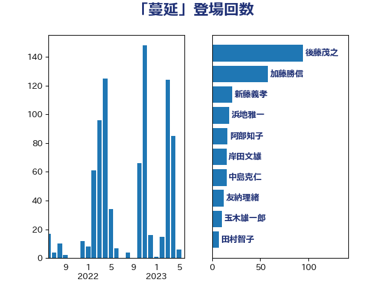

単語「蔓延」

| 後藤茂之 | 自由民主党 | 94 回 |
| 加藤勝信 | 自由民主党 | 58 回 |
| 新藤義孝 | 自由民主党 | 21 回 |
| 浜地雅一 | 公明党 | 18 回 |
| 阿部知子 | 立憲民主党 | 16 回 |
| 岸田文雄 | 自由民主党 | 15 回 |
| 中島克仁 | 立憲民主党 | 15 回 |
| 友納理緒 | 自由民主党 | 12 回 |
| 玉木雄一郎 | 国民民主党 | 10 回 |
| 田村智子 | 日本共産党 | 7 回 |
| 松本尚 | 自由民主党 | 7 回 |
| 吉田とも代 | 日本維新の会 | 7 回 |
| 高木かおり | 日本維新の会 | 6 回 |
| 野村哲郎 | 自由民主党 | 6 回 |
| 川田龍平 | 立憲民主党 | 6 回 |
| 山際大志郎 | 自由民主党 | 6 回 |
| 吉田統彦 | 立憲民主党 | 6 回 |
| 佐藤英道 | 公明党 | 6 回 |
| 野間健 | 立憲民主党 | 5 回 |
| 西村康稔 | 自由民主党 | 5 回 |
| 福島みずほ | 社会民主党 | 5 回 |
| 田村まみ | 国民民主党 | 5 回 |
| 櫻井周 | 立憲民主党 | 5 回 |
| 梅村聡 | 日本維新の会 | 5 回 |
| 天畠大輔 | れいわ新選組 | 5 回 |
| 北側一雄 | 公明党 | 5 回 |
| 井坂信彦 | 立憲民主党 | 5 回 |
| 阿部司 | 日本維新の会 | 4 回 |
| 長谷川淳二 | 自由民主党 | 4 回 |
| 鈴木庸介 | 立憲民主党 | 4 回 |
| 西岡秀子 | 国民民主党 | 4 回 |
| 本田顕子 | 自由民主党 | 4 回 |
| 山崎正恭 | 公明党 | 4 回 |
| 山下貴司 | 自由民主党 | 4 回 |
| 大串博志 | 立憲民主党 | 4 回 |
| 吉良よし子 | 日本共産党 | 4 回 |
| 倉林明子 | 日本共産党 | 4 回 |
| 長妻昭 | 立憲民主党 | 3 回 |
| 鈴木敦 | 国民民主党 | 3 回 |
| 金子恭之 | 自由民主党 | 3 回 |
| 赤嶺政賢 | 日本共産党 | 3 回 |
| 角田秀穂 | 公明党 | 3 回 |
| 藤巻健太 | 日本維新の会 | 3 回 |
| 羽生田俊 | 自由民主党 | 3 回 |
| 稲田朋美 | 自由民主党 | 3 回 |
| 石井苗子 | 日本維新の会 | 3 回 |
| 武部新 | 自由民主党 | 3 回 |
| 本田太郎 | 自由民主党 | 3 回 |
| 末松信介 | 自由民主党 | 3 回 |
| 山添拓 | 日本共産党 | 3 回 |
| 大西英男 | 自由民主党 | 3 回 |
| 和田政宗 | 自由民主党 | 3 回 |
| 吉田久美子 | 公明党 | 3 回 |
| 北神圭朗 | 無所属 | 3 回 |
| 丹羽秀樹 | 自由民主党 | 3 回 |
| 三木圭恵 | 日本維新の会 | 3 回 |
| 馬場伸幸 | 日本維新の会 | 2 回 |
| 階猛 | 立憲民主党 | 2 回 |
| 鈴木英敬 | 自由民主党 | 2 回 |
| 鈴木義弘 | 国民民主党 | 2 回 |
| 野中厚 | 自由民主党 | 2 回 |
| 足立康史 | 日本維新の会 | 2 回 |
| 芳賀道也 | 国民民主党 | 2 回 |
| 緒方林太郎 | 無所属 | 2 回 |
| 笠浩史 | 無所属 | 2 回 |
| 秋野公造 | 公明党 | 2 回 |
| 田畑裕明 | 自由民主党 | 2 回 |
| 田名部匡代 | 立憲民主党 | 2 回 |
| 田中健 | 国民民主党 | 2 回 |
| 猪瀬直樹 | 日本維新の会 | 2 回 |
| 牧山ひろえ | 立憲民主党 | 2 回 |
| 片山大介 | 日本維新の会 | 2 回 |
| 渡辺周 | 立憲民主党 | 2 回 |
| 江田憲司 | 立憲民主党 | 2 回 |
| 水岡俊一 | 立憲民主党 | 2 回 |
| 榛葉賀津也 | 国民民主党 | 2 回 |
| 柴田巧 | 日本維新の会 | 2 回 |
| 柚木道義 | 立憲民主党 | 2 回 |
| 林芳正 | 自由民主党 | 2 回 |
| 星北斗 | 自由民主党 | 2 回 |
| 徳永エリ | 立憲民主党 | 2 回 |
| 岸真紀子 | 立憲民主党 | 2 回 |
| 岬麻紀 | 日本維新の会 | 2 回 |
| 岩谷良平 | 日本維新の会 | 2 回 |
| 山谷えり子 | 自由民主党 | 2 回 |
| 山口壯 | 自由民主党 | 2 回 |
| 山井和則 | 立憲民主党 | 2 回 |
| 小西洋之 | 立憲民主党 | 2 回 |
| 小沼巧 | 立憲民主党 | 2 回 |
| 小林鷹之 | 自由民主党 | 2 回 |
| 宮本徹 | 日本共産党 | 2 回 |
| 宮口治子 | 立憲民主党 | 2 回 |
| 奥野総一郎 | 立憲民主党 | 2 回 |
| 堀内詔子 | 自由民主党 | 2 回 |
| 古屋範子 | 公明党 | 2 回 |
| 勝部賢志 | 立憲民主党 | 2 回 |
| 伊佐進一 | 公明党 | 2 回 |
| 仁木博文 | 無所属 | 2 回 |
| 中村裕之 | 自由民主党 | 2 回 |
| 齋藤健 | 自由民主党 | 1 回 |
| 高良鉄美 | 無所属 | 1 回 |
| 高橋光男 | 公明党 | 1 回 |
| 高木真理 | 立憲民主党 | 1 回 |
| 額賀福志郎 | 自由民主党 | 1 回 |
| 須藤元気 | 無所属 | 1 回 |
| 音喜多駿 | 日本維新の会 | 1 回 |
| 青柳陽一郎 | 立憲民主党 | 1 回 |
| 青木愛 | 立憲民主党 | 1 回 |
| 青山大人 | 立憲民主党 | 1 回 |
| 長友慎治 | 国民民主党 | 1 回 |
| 鎌田さゆり | 立憲民主党 | 1 回 |
| 野上浩太郎 | 自由民主党 | 1 回 |
| 遠藤良太 | 日本維新の会 | 1 回 |
| 遠藤敬 | 日本維新の会 | 1 回 |
| 逢坂誠二 | 立憲民主党 | 1 回 |
| 輿水恵一 | 公明党 | 1 回 |
| 赤羽一嘉 | 公明党 | 1 回 |
| 赤木正幸 | 日本維新の会 | 1 回 |
| 谷田川元 | 立憲民主党 | 1 回 |
| 萩生田光一 | 自由民主党 | 1 回 |
| 舩後靖彦 | れいわ新選組 | 1 回 |
| 舟山康江 | 国民民主党 | 1 回 |
| 細田博之 | 自由民主党 | 1 回 |
| 竹詰仁 | 国民民主党 | 1 回 |
| 福山哲郎 | 立憲民主党 | 1 回 |
| 石垣のりこ | 立憲民主党 | 1 回 |
| 石井章 | 日本維新の会 | 1 回 |
| 石井拓 | 自由民主党 | 1 回 |
| 田村貴昭 | 日本共産党 | 1 回 |
| 生稲晃子 | 自由民主党 | 1 回 |
| 熊谷裕人 | 立憲民主党 | 1 回 |
| 滝波宏文 | 自由民主党 | 1 回 |
| 源馬謙太郎 | 立憲民主党 | 1 回 |
| 清水真人 | 自由民主党 | 1 回 |
| 浦野靖人 | 日本維新の会 | 1 回 |
| 浜田聡 | NHK党 | 1 回 |
| 沢田良 | 日本維新の会 | 1 回 |
| 池下卓 | 日本維新の会 | 1 回 |
| 江島潔 | 自由民主党 | 1 回 |
| 水野素子 | 立憲民主党 | 1 回 |
| 橋本岳 | 自由民主党 | 1 回 |
| 横沢高徳 | 立憲民主党 | 1 回 |
| 森屋隆 | 立憲民主党 | 1 回 |
| 柳ヶ瀬裕文 | 日本維新の会 | 1 回 |
| 松本剛明 | 自由民主党 | 1 回 |
| 松原仁 | 立憲民主党 | 1 回 |
| 朝日健太郎 | 自由民主党 | 1 回 |
| 徳永久志 | 立憲民主党 | 1 回 |
| 広瀬めぐみ | 自由民主党 | 1 回 |
| 平沼正二郎 | 自由民主党 | 1 回 |
| 平木大作 | 公明党 | 1 回 |
| 山田賢司 | 自由民主党 | 1 回 |
| 山田宏 | 自由民主党 | 1 回 |
| 山田勝彦 | 立憲民主党 | 1 回 |
| 山本博司 | 公明党 | 1 回 |
| 山岸一生 | 立憲民主党 | 1 回 |
| 山口晋 | 自由民主党 | 1 回 |
| 小池晃 | 日本共産党 | 1 回 |
| 宮本岳志 | 日本共産党 | 1 回 |
| 守島正 | 日本維新の会 | 1 回 |
| 大岡敏孝 | 自由民主党 | 1 回 |
| 大塚耕平 | 国民民主党 | 1 回 |
| 塩田博昭 | 公明党 | 1 回 |
| 堀場幸子 | 日本維新の会 | 1 回 |
| 國重徹 | 公明党 | 1 回 |
| 古川俊治 | 自由民主党 | 1 回 |
| 務台俊介 | 自由民主党 | 1 回 |
| 前川清成 | 日本維新の会 | 1 回 |
| 住吉寛紀 | 日本維新の会 | 1 回 |
| 伊藤俊輔 | 立憲民主党 | 1 回 |
| 中川正春 | 立憲民主党 | 1 回 |
| 中川康洋 | 公明党 | 1 回 |
| 下村博文 | 自由民主党 | 1 回 |
| 上月良祐 | 自由民主党 | 1 回 |
| 三浦信祐 | 公明党 | 1 回 |
| 三ッ林裕巳 | 自由民主党 | 1 回 |
| たがや亮 | れいわ新選組 | 1 回 |
| こやり隆史 | 自由民主党 | 1 回 |
| おおつき紅葉 | 立憲民主党 | 1 回 |